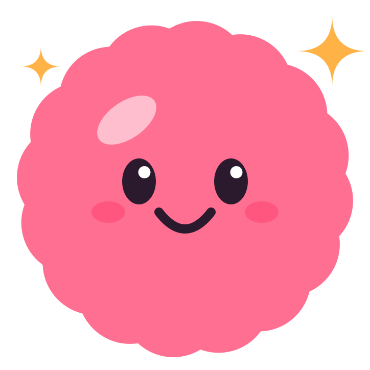

Pompon Labs
De petites applis, faites avec soin.

Botz
Un jeu de sport à physique : des petits robots, un réveil qui s'enfuit, solo ou à deux.

Popote
Planifiez vos repas de la semaine en groupe et partagez une liste de courses automatique.

Zoralia
Les routines des enfants deviennent une aventure : missions, pas sur la carte et coffres à ouvrir.
Une question, une idée : contact@pomponlabs.com